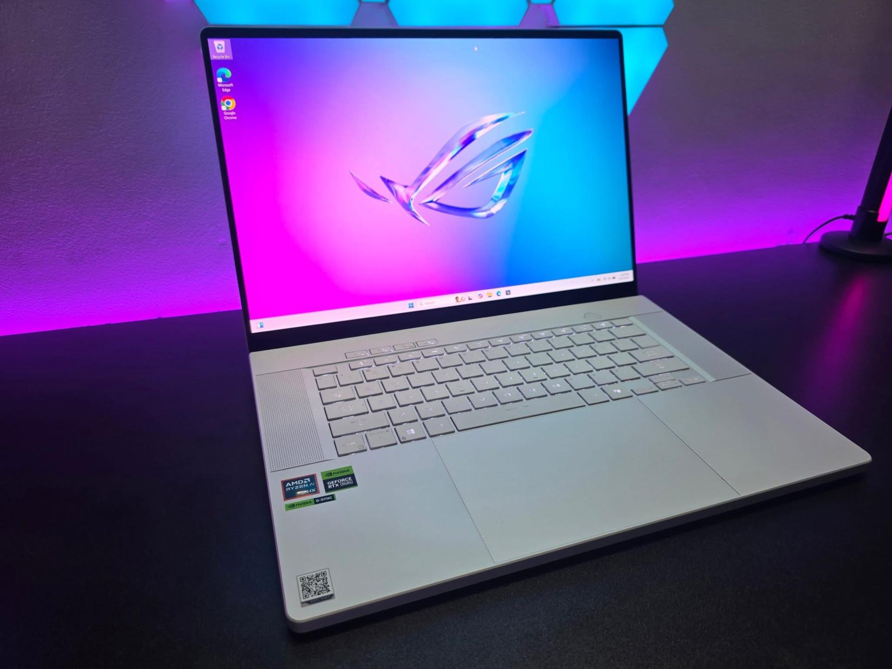
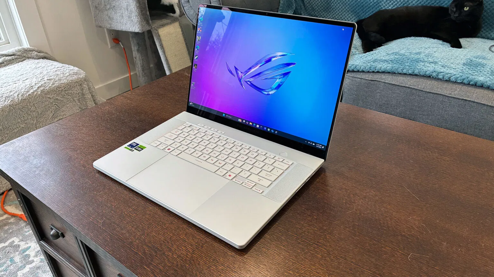
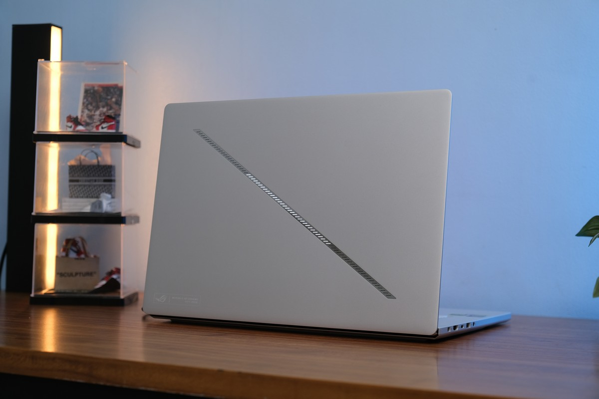
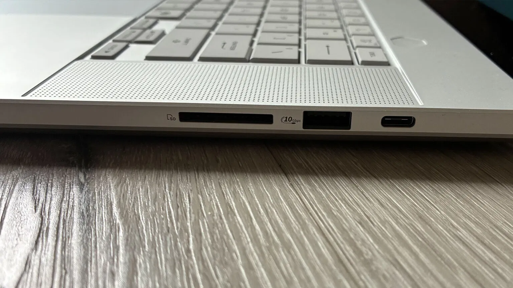
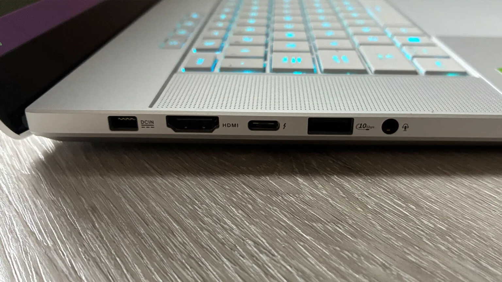
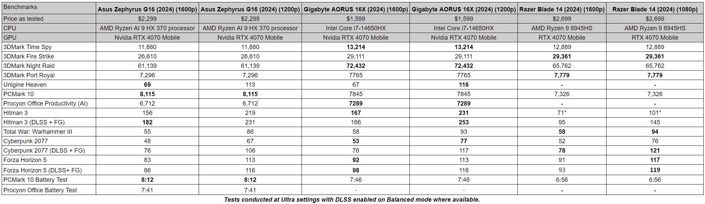
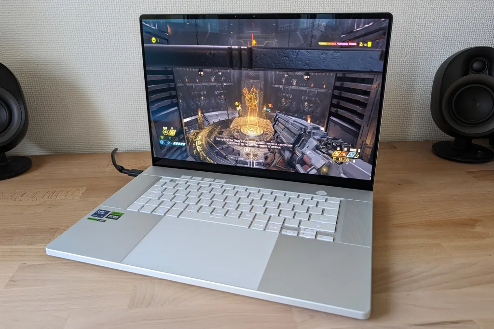
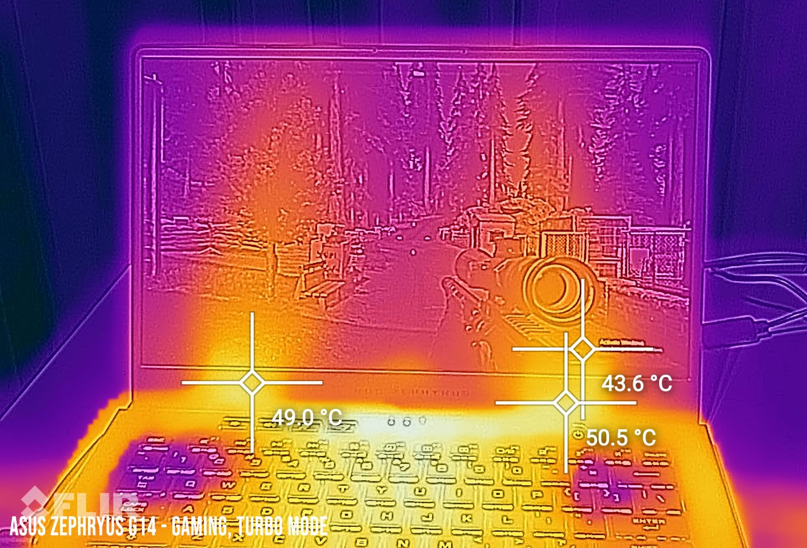
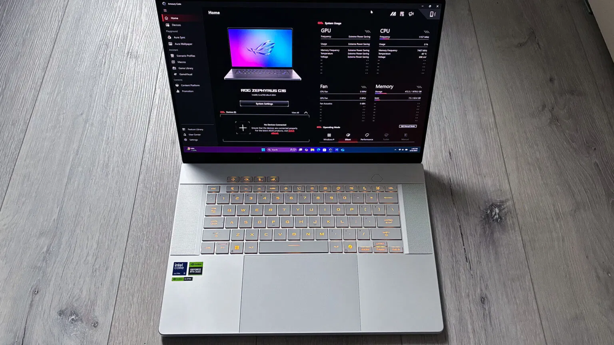

The ASUS ROG Zephyrus G16 has long been a darling of the gaming laptop world, blending high-end performance with a svelte, MacBook-esque design that dares to whisper "professional" while screaming "gamer" under the hood. The 2025 model (GU605) ups the ante with Intel's Core Ultra 9 285H processor, NVIDIA's RTX 50-series GPUs, and a jaw-dropping 16-inch OLED display. But with a starting price north of $2,799 and stiff competition from Razer and Lenovo, does it still deserve its crown as the ultimate thin-and-light gaming machine? After diving into its specs, testing its limits, and living with it for a while, here's my take.
From the moment you unbox the Zephyrus G16, it's clear ASUS isn't messing around. The CNC-machined aluminum chassis—available in Eclipse Gray or Platinum White—feels like it could go toe-to-toe with a MacBook Pro. At just 1.85 kg and under 1.5 cm thick in spots, it's a marvel of engineering for a 16-inch gaming laptop. The “Slash Lighting” LED strip on the lid adds a subtle flair, replacing the flashier AniMe Matrix of older models. It's the kind of laptop you'd confidently pull out at a coffee shop or a LAN party.
 Ports are plentiful: two USB-C (one with Thunderbolt 4), two USB-A, HDMI 2.1, a full-size SD card reader, and a headphone jack. Creators will love the SD slot, though its 80-90 MB/s speeds aren't breaking records. The keyboard is a joy for typing, with springy keys and a Copilot button for AI enthusiasts, but it lacks the buttery refinement of a Razer Blade. The massive trackpad is smooth, though its click feels a tad hollow. My one gripe? The palm rest has a hint of flex under pressure—not a dealbreaker, but noticeable on a $3,000+ machine.
 The 1080p webcam gets the job done for video calls, and the speakers? Wow. They pump out rich, bassy sound that rivals high-end ultrabooks, making movies and music a treat without headphones.
The star of the show is the 16-inch, 2560x1600 (QHD+), 240Hz OLED Nebula Display. With 100% DCI-P3 coverage, a 0.2ms response time, and VESA DisplayHDR True Black 500 certification, it's a visual feast. Playing Cyberpunk 2077 on this panel feels like stepping into Night City—colors pop, blacks are inky, and NVIDIA G-Sync keeps everything buttery smooth. For creators, the Delta E < 1 accuracy makes photo and video editing a dream.
That said, it's not flawless. Peak brightness hits ~500 nits (600 in HDR for small areas), which is great for OLED but trails mini-LED rivals like the Lenovo Legion Pro 7i. In bright rooms, reflections can be a nuisance. And while ASUS's pixel-shift tech mitigates burn-in, I'd be cautious about leaving static HUDs on-screen for hours. Still, for gaming and Netflix binges, this is one of the best displays I've seen on a laptop.
Under the hood, the G16 packs Intel's Core Ultra 9 285H (16 cores, 16 threads) and, in my test unit, an RTX 5080 running at 120W TGP. Configurations range from RTX 5070 to RTX 5090, with up to 64GB of LPDDR5X RAM (soldered, sadly) and 2TB SSD storage. On paper, it's a beast, but the slim chassis imposes limits.
Gaming at 1440p is impressive but not class-leading. In Baldur's Gate 3, I hit ~55-60 FPS on Ultra with DLSS 4, smooth enough to lose myself in Faerûn. DOOM Eternal screamed along at 120+ FPS, leveraging the 240Hz panel. However, compared to thicker laptops like the Gigabyte Aorus Master 16 (175W RTX 5090), the G16's lower TGP means you'll tweak settings in some AAA titles to max out frame rates. The RTX 50-series' efficiency and DLSS 4 help, but don't expect desktop-replacement power.
For creative work, the G16 shines. Editing 4K video in Premiere Pro was snappy, and Photoshop handled large RAW files with ease. But the Core Ultra 9 285H feels like a step back from 2024's Meteor Lake chip in sustained CPU tasks—think 3D rendering or heavy compiles—where multi-core performance dips. If you're a creator who moonlights as a gamer, 32GB RAM is a must.
ASUS's ROG Intelligent Cooling—vapor chamber (on high-end models), liquid metal, Tri-Fan setup, and 2nd Gen Arc Flow Fans—works hard to keep temps in check. During long Warhammer 40,000: Space Marine 2 sessions, the keyboard stayed comfy, but vents got toasty, and the chassis near the back could double as a hand warmer. Turbo Mode unleashes max power at the cost of sounding like a small jet engine, while Silent Mode is blissfully quiet but dials back performance.
Compared to 2024's G16, the vapor chamber helps, but the thin design can't fully tame an RTX 5080 or 5090 under load. Its a trade-off: portability over absolute thermal dominance.
With a 90Wh battery, the G16 defies gaming laptop stereotypes. Light tasks like writing this review or browsing Chrome lasted ~8-10 hours, and looping a 1080p video stretched to 13 hours in power-saving mode. Fast charging (0-50% in 30 minutes) is a lifesaver. Gaming, naturally, tanks it in 1-2 hours, but that's par for the course.
The 200W charger is a brick, though some configs include a compact USB-C option for travel. Against the 2024 AMD-based G16, it's a touch less efficient, but for a gaming laptop, this is stellar.
Armoury Crate is your command center for performance modes, RGB tweaks, and fan curves. It's powerful but bloated, with overlapping options that can confuse. Advanced Optimus handles GPU switching well, though I had to nudge a few apps to use the discrete GPU. As a Copilot+ PC, the G16's NPU enables slick AI tricks—real-time transcription, video enhancements—but gamers won't care much. The ecosystem feels polished, yet I wish ASUS streamlined the software.
At ~$3,599 for the RTX 5080 config I tested (32GB RAM, 2TB SSD), the G16 isn't cheap. It's a premium buy for those craving a portable, gorgeous laptop that games well and doubles as a creative workstation. But if raw performance is your goal, the Lenovo Legion Pro 7i delivers more grunt for similar cash, and the Razer Blade 16 edges out in refinement (at a higher price). The 2024 AMD G16 might even be a better deal if you prioritize efficiency.
Who's It For?
Who Should Pass?
The ASUS ROG Zephyrus G16 (2025) is a dazzling blend of form and function, with a display that'll make your eyes fall in love and a build that begs to be shown off. But its thermal limits and slightly underwhelming CPU keep it from dethroning the best. If you're after a laptop that's as comfortable in a boardroom as it is in a gaming den, it’s a fantastic choice—just know you're paying for finesse as much as firepower.
Comment Section